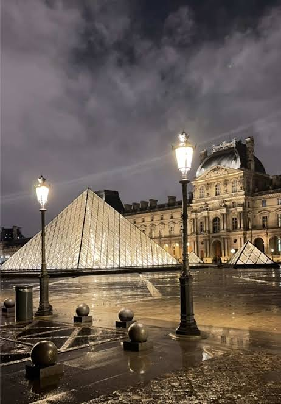
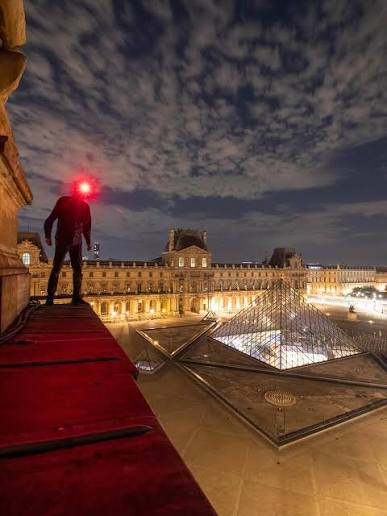

ΜΟΥΣΕΙΟ ΤΟΥ ΛΟΥΒΡΟΥ • ΠΑΡΙΣΙ
19 Οκτωβρίου 2025 — 02:14 π.μ.
REC • CAM-04 // RICHELIEU

«Η αυλή είναι άδεια και οι εξωτερικές κάμερες απενεργοποιήθηκαν. Όλα είναι έτοιμα για τη ληστεία του αιώνα...»

«Είμαστε στην ταράτσα πάνω από την Πτέρυγα Richelieu. Στόχος: το Ξίφος του Καρλομάγνου. Μπαίνουμε μέσα.»
🔦 Πλησιάζετε το πολύτιμο Ξίφος του Καρλομάγνου...
🚨
ΣΥΝΑΓΕΡΜΟΣ!
Ο συναγερμός ενεργοποιήθηκε, οι αρχές είναι καθοδόν και η Κεντρική Πύλη της Πυραμίδας κλείδωσε!
Βρείτε την έξοδο προς την Πτέρυγα Sully!
🔦 Κεντρική Αίθουσα Richelieu Wing |
Πλησιάστε τα εκθέματα (⬆️ ⬇️ ⬅️ ➡️) & πατήστε E
● Εσύ
● Συμπαίκτης
[E] Συλλογή εκθέματος
■ Πλάκα Co-Op Γρίφου